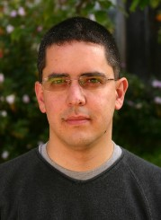
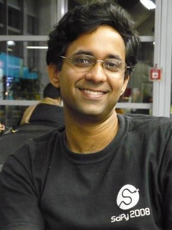
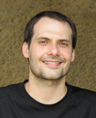
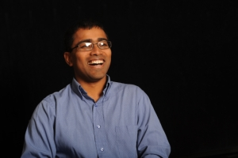
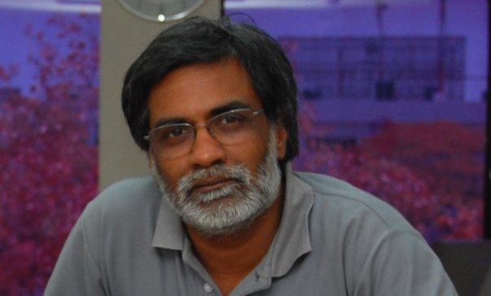

Fernando Perez
Fernando Perez received his PhD in Physics from the University of Colorado, Boulder, in 2002, working on questions regarding the toplogical structure of the QCD vacuum using Lattice Gauge Theory techniques. He then worked at the Applied Mathematics department there, focusing on the development of a new family of algorithms for the efficient application of linear operators in multiple dimensions, with a focus on the uses of such techniques on the (bound state) multiparticle Schrodinger Equation. Since early 2008, he has worked as a research scientist at the Helen Wills Neuroscience Institute at the University of California, Berkeley, on the development of new algorithms and tools for neuroimaging. He is actively involved in the development of tools for scientific computing using high-level languages, in particular Python. He is the creator and lead developer of the IPython project for interactive computing (http://ipython.scipy.org) and an active contributor to other scientific Python projects, as well as a frequent lecturer on these topics.John Hunter
John Hunter received his Ph.D. in Neurobiology from the University of Chicago for experimental and numerical modeling work on the synchronization of neurons to aperiodic stimuli and the non-linear response of synapses to aperiodic inputs. His postdoctoral research was in coherence and characterization of transient synchronizations in pediatric epilepsy. He left academia in 2005 for quantitative finance, and is a Senior Quantitative Analyst at TradeLink Securities. An avid python programmer and lecturer in scientific computing in python, he is the creator and lead developer of the scientific visualization package, matplotlib.Perry Greenfield
Perry Greenfield received a Ph.D. in Physics from M.I.T. His thesis was based on Very Large Array radio observations of the first discovered gravitational lens. After a short stint in communications engineering at Bell Labs, he ended up at the Space Telescope Science Institute, where he has worked for the last 25 years. He was initially responsible for calibrating the Faint Object Camera for the Hubble Space Telescope, but for the last 15 years has been leading the Science Software Branch. He has pioneered the use of Python in astronomy, and his group has been heavily involved in Python for the last 12 years. They have developed PyRAF, numarray (the precursor to current numpy capabilities), PyFITS, and were heavily involved in the development and support of matplotlib. His group is now involved in developing the science software to support the next large space telescope under construction, the James Webb Space Telescope.
Prabhu Ramachandran
Dr Prabhu has been a faculty member at the department of Aerospace Engineering, IIT Bombay since 2005. He has a PhD in Aerospace Engineering from IIT Madras. His research interests are primarily in particle methods and applied scientific computing. He has been active in the FOSS community for more than a decade. He co-founded the Indian Linux User Group - Chennai (ILUGC) in 1998 and is the creator and lead developer of the (FOSS-India-award-winning) Mayavi and TVTK Python packages. Prabhu has contributed to the Python wrappers of the Visualization Toolkit (VTK). He is an active member of the SciPy community and a member of the Python Software Foundation (PSF). In 2009, he gave the keynote address at India's first PyCon. Prabhu currently heads the FOSSEE project (http://fossee.in) which aims to spread the use of Python (and other Free Software) in the curriculum.Stéfan van der Walt
Stéfan van der Walt is a researcher and lecturer in Applied Mathematics at Stellenbosch University, South Africa. He holds a BEng (E&E with CS) (2005) and MScEng (2005) from the same institution, and recently completed his PhD on super-resolution imaging. His current research interests include mathematical modeling in neuro-imaging, the discrete pulse transform, GPU computing and manifold learning. Stéfan is a strong proponent of free and open software for scientific research and teaching, and has been part of the NumPy community since 2006.
Jarrod Millman
He is on the SciPy steering committee and an active contributor to both the NumPy and SciPy projects. He is the acting managing director and the director of computing for UC Berkeley's Neuroscience Institute, where he helped found the Neuroimaging in Python (NIPY) project.
Satrajit Ghosh
Satrajit Ghosh is a research scientist at the Research Laboratory of Electronics at MIT and a faculty member of the Speech and Hearing Biosciences and Technology program within the Harvard-MIT division of Health Sciences and Technology. He has extensive experience with neuroimaging, signal processing and software development. He has developed state-of-the-art tools for analysis of neuroimaging data and is managing the development of a Python-based, opensource, multi-institution software project aimed at improving interoperability among existing imaging analysis software packages (http://nipy.org/nipype/). His current research focus is on utilizing pattern classification approaches for diagnosis and prediction of neurological disorders. His prior work involves real-time synthesis of computer music and sound effects, controlling chaotic oscillators, computational modeling of speech acquisition and production, and realtime DSP-based speech signal processing. He holds a BS(Honors) degree in Computer Science from the National University of Singapore and a PhD in Cognitive and Neural Systems from Boston University.